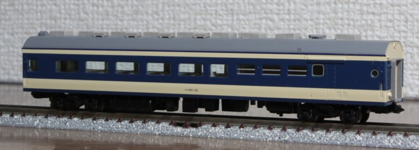

583系
今年9月に、C56発売待ちの間にちょっと遊ぶつもりでいじったのですが、いじり始めるといろいろ気になりあちこちいじる羽目に。
実物は引退間近です。

いちばん格好良いと思うアングルから。
とりあえず各車両並べてみます。

何か改造をしているわけではないですが、手を入れている場所です。
- お湯をかけて車体の反りを矯正。
- ライトケースリム内側に銀を色入れ。
- 窓周りの青色の印刷が回っていない部分を青15号でタッチアップ。
- 雨どい上面をダークグレーで色入れ。
- ヘッドライトをLED化。
- 車輪を黒染め車輪に交換。
- 車番はレボリューション製,JNRマークはジオマトリックス製インレタを貼り付け。地味にグリーン車マークはKATO製なので、付属のインレタは無傷です。。。
色入れ前・色入れ後です。手前が色入れ前で奥が色入れ後。
窓周り・屋根周りに透けていたクリーム色が見えなり、幕板と腰板のみがクリーム色になるので全体として落ち着きます。
大きな車体と相まって、付属のパンフレットの言葉通り"しっとり"とした雰囲気になります。
雨どい上面はほかの完成品では車体色の場合が多いです。当初はそれにならって最初青15号を入れてみたのですが、 雨どいが太くもっさりとした感じになってしまい方針変更しました。
色入れ途中。筆塗りですが面積が狭いので塗りムラはあまり気になりません。
カッコ良くなった(と自分では思っている)横方向からの眺めです。
煌々と光るヘッドライト。
ヘッドライトは電球色LED2個、テールライトは白色LED1個です。チップ部品を派手に空中配線。
運転席上部のライトへの導光材直下にLEDを1個配置して明るく光るようにしました。
ヘッドマークの白色はプリズム背面に青色を塗って白っぽくしようとしていますが、これは青みがかってしまいうまくいっていません。
煌々と光る雰囲気を優先です。
あと、地味に基板の足を細い線(φ0.25燐青銅線)に交換しています。こちらは車体の浮き対策。
8両編成で運用中です。あとモハネ2ユニットとサハネを追加すれば13連になるのですが、ちと長すぎるか。
お気に入りの編成になりました。
すぐに走らせられるKATO製品とは対照的にあちこちいじらないといけないトミックス製品ですが、そこが可愛いところ?なのかもしれません。